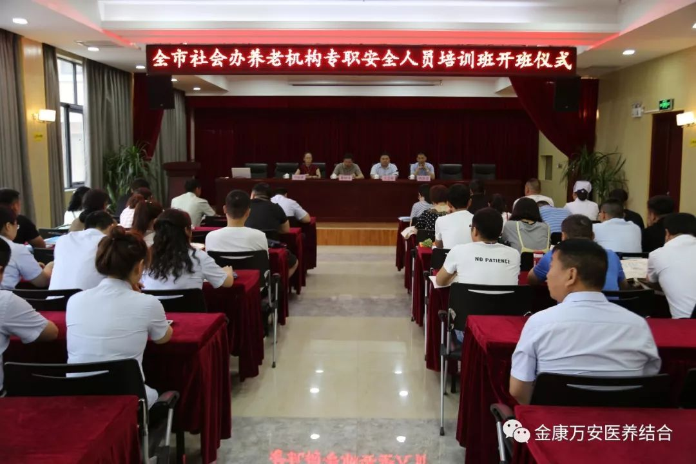
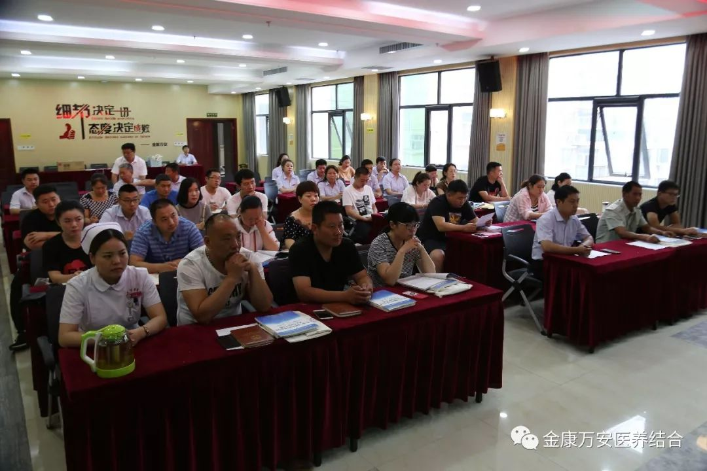
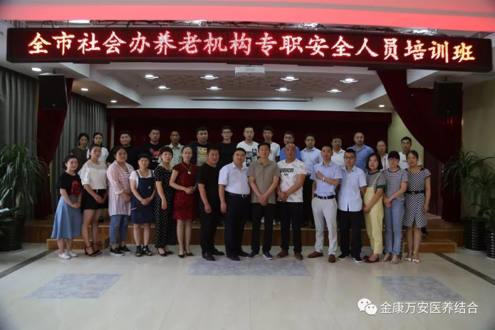

2018年6月18日上午，由漯河市民政局、漯河市老龄办共同主办，漯河市老龄产业协会承办，为期6天的的“2018全市社会办养老机构专职安全人员培训班”在漯河万安老年公寓正式开班，此次培训由河南睿控消防职业培训学校负责授课，来自全市多家养老机构共计30名人员参加了此次培训。
 上午八点半举行了开班仪式，市老龄办葛继锋主任、市老龄产业协会会长、万安医院、万安老年公寓院长王卫峰、市老龄产业协会秘书长邓丽娜、河南睿控消防职业培训学校老师陈前进参加了此次开班仪式，葛主任主持了此次开班仪式。
右一河南睿控消防职业培训学校老师陈前进、右二万安老年公寓院长王卫峰、左二市民政局老龄办主任葛继锋、左一市老龄产业协会秘书长邓丽娜
开班仪式上，王院长首先对前来参加此次培训的各位学员和领导表示欢迎，同时也对各位学员提出了三点希望：1、扎实充电2、总结实践3、责任使命，希望全体学员通过此次培训，树立我们的消防安全理念，并形成在日常工作、生活中良好的行为习惯，从而大大的降低火灾事故的发生，为单位安全生产打下良好的基础。
王院长致欢迎词
邓丽娜作为此次培训班的班主任在开班仪式上对学员说了三句话：1、安全2、获证3、祝愿，希望全体学员在今后的几天里，珍惜这次学习的机会，掌握消防知识，提高技能，争取圆满的通过此次考试，获得证书。
邓秘书长发表讲话
学员代表发言
葛主任发表讲话
全体学员及领导合影留念
葛主任在最后总结中讲到，目前我市已进入人口老龄化快速发展期，我市仅有各类养老机构、老年公寓102家，入住老人近万人，从业人员近千人，而具有专业消防安全知识的从业人员几乎为零。如何预防安全事故的发生，让养老机构的财产得到保障，让老年人的生命安全得到保护，成为摆在我们面前急需解决的重要问题，所以尽快建立一支安全员队伍既是养老机构的迫切需要，也是广大老年人及其家属的愿望。举办此次专职安全员培训班，希望全体学员做到三点要求：1、 要充分认识养老机构安全人员的重要性2、要珍惜学习机会，切实掌握和提高消防专业安全知识和处理安全隐患、事故的能力3、遵守学习纪律。希望大家通过此次培训进一步提升大家的专业技能，更好的保障、保护我们养老机构和老年人的安全，实现养老机构的规范化管理。